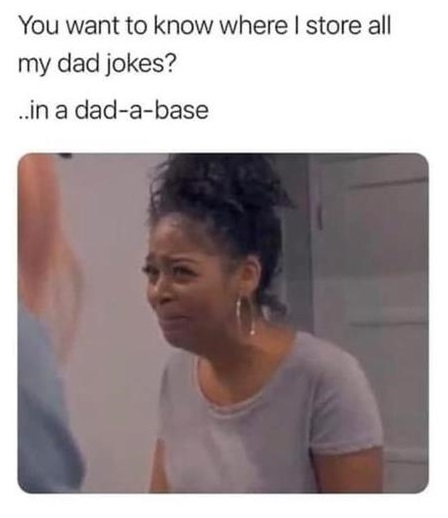
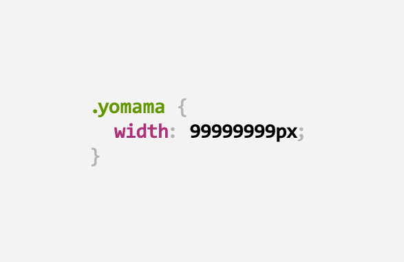

Python is increasingly used in web applications, simple scripting and automation, and machine learning applications.
Its wide range of applications makes it a powerhouse and a great programming language to learn.
When getting started in python it is important to learn some basics first:
- Variables - the value of a variable is... well, variable. You can use variables to store values that are not always the same and reference them later in your program.
- Operators - we can use tools like arithmetic operators to perform calculations, or logical operators like "and" and "or" to compare variables.
- Datatypes - while we can assign a variable an integer value like 6, we could also assign strings/character values like "six", floating point numbers (6.0), or even lists [6, 5, 4, 3, 2, 1]
- Selection - being able to decide when or "if" an operation should occur is an important part of creating a useful program. An if statement allows you to execute a certain function of the program only when a certain requirement is met.
- Repetition - If you are going to perform the same task multiple times, it makes sense to use a loop. A loop can compute the same task over and over "for" a set number of times or indefinitely "while" a condition is true.

Structured Query language is used almost exclusively in database applications.
In GIS, databases are massively important for storing vector attribute data. There are 4 main functions for querying data:
- SELECT - this keyword allows you to select items from the database. Combined with the WHERE clause, you can select only records in the database where a certain condition is met.
- INSERT - using insert into will allow you to transfer data from one table and append it to another. We can use insert into to bring multiple databases together or add new records to an existing database.
- UPDATE - you can use the update keyword to update existing records in the database.
- DELETE - does what it says on the tin. Use the delete keyword to remove records from the database

Hypertext Markup Language and Cascading Style Sheets can be used in conjunction to create and display web pages. Implementing Javascript can increase the interactivity of your web page further.
HTML is the standard marke-up language. Using the following objects, you can simply share information over the web:
- Elements - HTML uses elements, such as the paragraph or heading tags, to define text.
- Attributes - elements can be given attributes to help describe and display the elements.
Since the introduction of HTML5, CSS is the standard language for design aspects of web. Using CSS, we can specify attributes of HTML tags and define classes for certain HTML objects
- Selectors - CSS selectors can be used to style specific HTML elements. For example, using the p selector, we can select all paragraph elements.
- Properties and Values - We can set the properties after selection using the property, for example, color, with a property value, like green.
Javascript can be used to make interactive functionality to the website. An example of this can be seen on our questions/FAQ page.